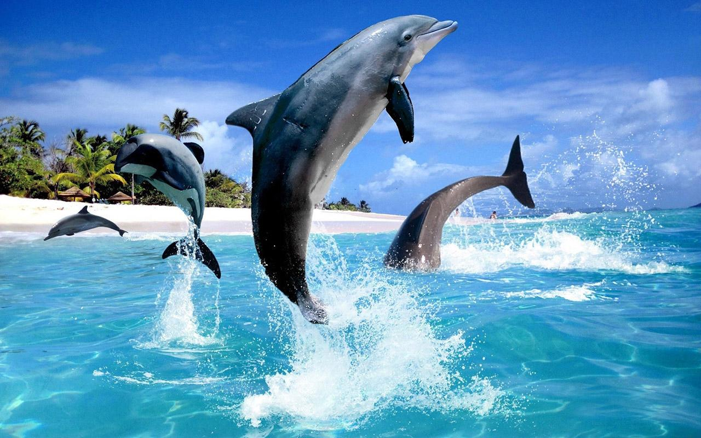
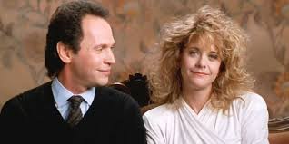
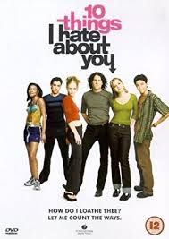
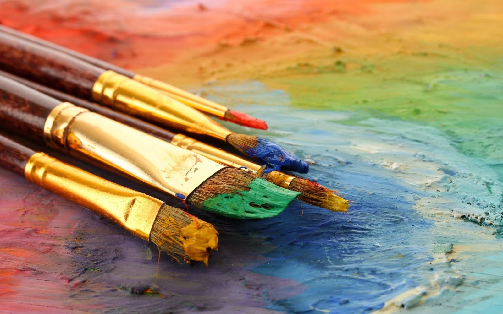
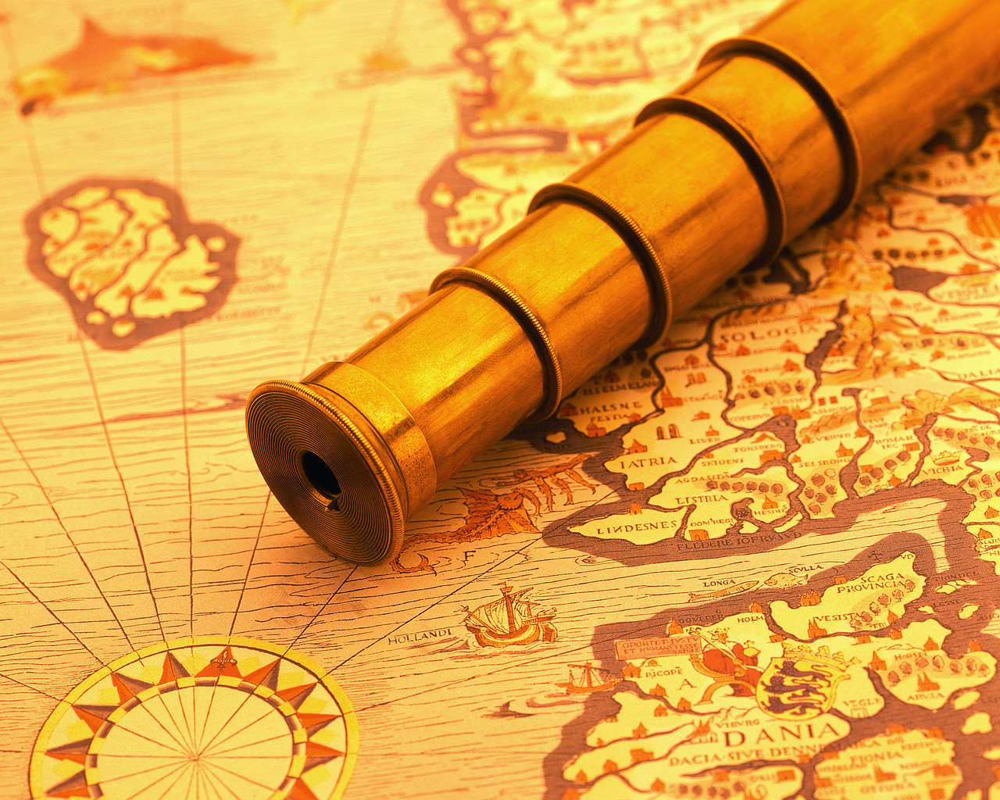

Welcome to Deena's Homepage!
On here, you will find everything you need to know about her.
Please use the navigation bar above to find out what you are looking for.

Quick Facts About Deena
- She is seventeen.
- She is a senior in high school.
- She lives in New York City but was born in Bangladesh.
- Her favorite color is red.
- She wants to become a neurologist.
- She enjoys experimenting with makeup.
Welcome to my Family Page
Click through for a look into my family!
3 / 3

Caption Three
❮
❯
A Gallery of Favorites
From places, to flowers, to animals, these are some of my very favorite things.
1 / 5
HORSES
Horses are my favorite animal.
They are majestic.
They are full of grace.
They are beautiful.
2 / 5

DOLPHINS
These are also my favorite animals.
Dolphins are playful, intelligent, and fun.
They are the underdog.
They are beautiful animals.
They communicate with each other.
They are a burst of energy on a dark day.
3 / 5

WHEN HARRY MET SALLY
One of my all-time favorite movies.
It's a feel good movie.
And I love Meg Ryan's hair.
4 / 5

10 THINGS I HATE ABOUT YOU
My favorite 90s movie.
The cast is brilliant.
This modern-day Shakespeare tale is engaging,
funny, and captures the essence of the 90s.
5 / 5
ADELE
I love her as a person and an artist
Someone Like You is my favorite song of hers.
❮
❯
Other Favorites
- Favorite Movies
- A Walk to Remember
- Harry Potter
- Clueless
- 10 Things I Hate About You
- While You Were Sleeping
- Favorite TV Shows
- Charmed
- Gossip Girl
- One Tree Hill
- Favorite Musical Artists
- He Is We
- Adele
- Lauren Alaina
- Halsey
- Ed Sheeran
- Favorite Books
- Picture of Dorian Gray
- Exit West
- Tell Me Three Things
- Night Owls
- Favorite Foods
- Biryani
- Samosa
- Chotpoti
- Haleem
- Pizza
- Favorite Subject
- Favorite Candy
- Jolly Ranchers
- Crunch Candy Bar
- Favorite Disney Movie
- Favorite Actresses
- Sandra Bullock
- Emma Stone
- Blake Lively
- Favorite Flowers
- Lily
- Scorpion Grasses
- Cherryblossom
What Do I Like to Do?
These are some of my rainy-day activities for when I'm feeling bored.
1 / 6

I really enjoy making origami.
Cutting and folding the paper is very relaxing.
And the end product is always beautiful.
2 / 6

Reading has always been my favorite hobby.
I like reading all genres, but my favorite is realistic fiction
or dystopian fantasy.
3 / 6

I like doing different arts and crafts.
Painting is something that is part of that.
Painting is a way for me to express my creativity
and relax for a while.
4 / 6

Scrapbooking is something I really like to do.
It can seem meticulous and super time-consuming.
But it is relaxing for me and I really like going back
and looking through my old ones.
5 / 6

I like to experiment with different dishes
whenever I have free time.
It is always a learning experience for me
and a way for me to learn more about my culture.
6 / 6

I like exploring new places.
Every summer, my family goes on many picnics and we get to
visit many different parks around the city.
My favorite thing to do during these picnics is to walk around
and explore the parks. It's a way for me to relax and see a new place.
❮
❯